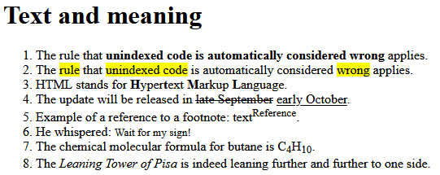

Text is not necessarily just text. Text parts with special meaning (e.g. "important text" or "deleted text") can be defined in HTML5 by Phrase elements.
The content of phrase elements may only consist of plain text and/or additional phrase elements.
The page ../solutions/task33.html
consists of text excerpts, all of which contain text parts with special meaning.
You can find the text parts as well as the final result on the following screenshot:
